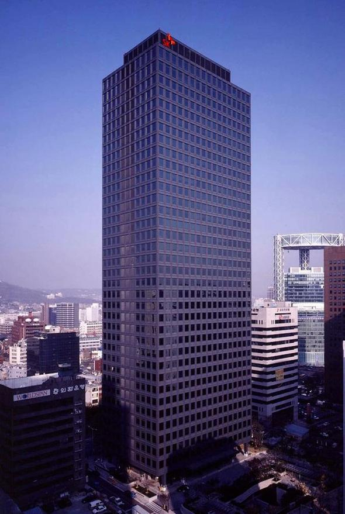
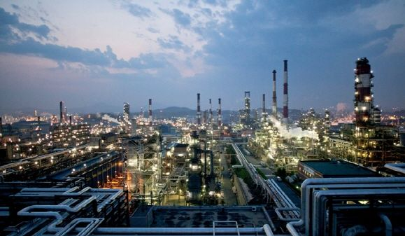

SK이노베이션의 정유자회사로 국내 최초 정유업체이기도 하다. 대한민국 4대 정유사(SK에너지, S-OIL, GS칼텍스, 현대오일뱅크) 중 1위답게 세계 3위의 정제능력(하루 84만 배럴)을 가진 울산 CLX를 보유하고 있다.
1962년에 한국 정부가 미국 걸프 사[2]의 지분 25% 참여를 받아들여 대한석유공사로 설립했다. 1964년에는 울산 정유공장을 준공하고 1969년 휘발유 브랜드 '스페샬', '슈퍼' 등을 잇따라 출시했다. 1971년에는 석유 위탁판매업체 (주)흥국상사의 주식 전량을 인수해 자회사로 두었다. 그러나 1973년과 1979년에 두 차례 터진 오일쇼크의 유탄을 맞은 걸프 사가 1980년 8월에 소유 지분 50%를 대한석유지주에 팔아치워 철수하였고, 이에 따라 정부는 선경을 유공 민영화 대상자로 지정해 걸프가 가졌던 주식 50%를 매각해 민영화시켰다.
1982년 (주)유공으로 사명을 변경했고 2년 뒤에 미국 헌트 사와 예멘 마리브 유전개발에 참여하고 기술개발연구소를 세우는 한편, 1989년 MTBE 생산공장을 준공했다. 1995년 10월에는 '엔크린'을 출시해 호남정유에 이어 휘발유의 브랜드화를 실천했다.
1997년 10월 SK주식회사로 사명을 변경하는 한편, 흥국상사와 오륜에너지, 삼일사, 삼양석유 등 가맹 판매조직들을 통합해 SK에너지판매로 출범시켰다. 2000년 SK에너지판매를 SK글로벌에 합병시켰다. 2005년 10월에 SK그룹이 로고를 교체함에 따라 행복날개로 로고를 교체하였으나, 주유소의 공간 디자인 교체 사업은 2006년 4월에 이루어졌으며, 사진을 보면 알 수 있다시피 탱크로리에 새겨진 로고도 2006년까지는 이전 로고가 부착되어 있었다.
2007년에 구 법인이 지주회사로 전환됨에 따라[3] 에너지/화학부문을 물적분할해 신설법인 SK에너지로 재탄생했고, 2011년 1월 자신도 석유지주사로 전환하여 SK이노베이션이 됨에 따라 또다시 물적분할되어 신설법인이 기존 사명을 이어받았다[4]. 2013년에 일부 사업부문을 SK트레이딩인터내셔널 및 SK인천석유화학으로 인적분할하고 2017년에는 SK네트웍스부터 직영 주유소 부문도 양수하기로 결정했다.
본사 : 서울특별시 종로구 종로 26

울산 complex : 울산광역시 남구 신여천로 2
